iPhone dùng bao lâu thì tụt pin? Nguyên nhân, cách khắc phục
19/04/2024
iPhone dùng bao lâu thì tụt pin là một hỏi không thể trả lời chính xác. Bởi vi, tùy theo người sử dụng mức pin sẽ tuột % khác nhau. Vậy đâu là nguyên nhân gây ra tình trạng tụt pin nhanh trên dòng iPhone? Hãy cùng 24hStore tìm hiểu nguyên nhân và cách sửa chữa tình trạng tụt pin trong bài viết này nhé.
1. iPhone dùng bao lâu thì tụt pin?
Thông thường, không có con số nào cụ thể nói về điện thoại iPhone dùng bao lâu thì tụt pin khi bạn sử dụng thiết bị. Khi điện thoại bị tụt pin bao gồm nhiều yếu tố như: Thời lượng sử dụng, dòng máy, tần suất sử dụng, quá trình sạc và phụ kiện đi kèm chính hãng hay không. Pin iPhone sẽ giảm từ 2 - 5%, con số trên được một người dùng sử dụng iPhone 14 Pro Max đo được sau 1 tháng sử dụng 1 ngày tầm 10 tiếng với các tác vụ như: nghe nhạc, xem video, chơi game ít, sạc pin bật tối ưu hóa và sử dụng các phụ kiện đi kèm chính hãng đến từ nhà Apple. Như vậy kết quả đo được người dùng sẽ cần thay pin mới chính hãng vào 5 năm sau khi pin chỉ còn dưới 80%.
Bên cạnh đó nếu bạn sử dụng các tác vụ hơn 12 tiếng một ngày bao gồm chơi game, sạc nhồi,...dung lượng pin bị tuột có thể giảm tới 10%/ năm. Dẫu thế, nếu bạn cứ quan tâm thời lượng pin iPhone mà không dám tận dụng hết công xuất, chưa thỏa mãn sử dụng thiết bị này mang lại quả là một điều thiếu sót. Thế nhưng, nếu bạn muốn điện thoại iPhone bị tụt pin ít và thời gian sử dụng lâu hơn, bạn cần sử dụng các linh kiện chính hãng và quy trình chuẩn khi dùng iPhone.
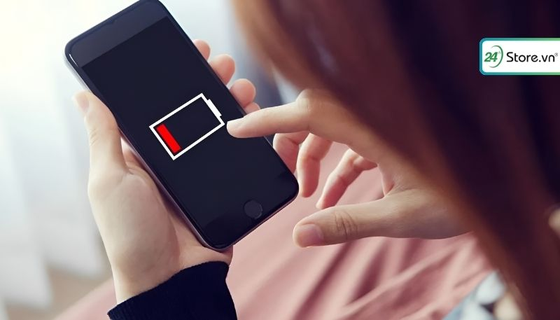2. Nguyên nhân dung lượng pin iPhone tụt nhanh là gì?
Nhiều người dùng iPhone bỗng dưng gặp hiện tượng pin tụt nhanh chóng, ảnh hưởng đến hiệu suất sử dụng. Biểu hiện thường thấy là iPhone nhanh hết pin dù đã sạc đầy, hoạt động chậm chạp, đơ lag liên tục. Vậy iPhone dùng bao lâu thì tụt pin và nguyên nhân nào dẫn đến tình trạng này?
2.1. Tình trạng pin iPhone không tốt
Theo dõi tình trạng pin iPhone là điều cần thiết để đảm bảo hiệu suất sử dụng và kéo dài tuổi thọ thiết bị của bạn. Dung lượng tối đa pin, hay còn gọi là Maximum Capacity, là một tính năng hữu ích giúp người dùng iPhone nắm rõ tình trạng pin của điện thoại. Tuy nhiên, nhiều trường hợp người dùng gặp phải tình trạng dung lượng tối đa pin iPhone tụt nhanh chóng chỉ sau thời gian ngắn sử dụng. Nguyên nhân chính có thể do việc thay thế pin iPhone tại những cơ sở sửa chữa không uy tín có thể dẫn đến việc sử dụng pin giả, nhái, kém chất lượng. Loại pin này thường có dung lượng thấp, nhanh chai và ảnh hưởng đến hiệu suất hoạt động của iPhone.
Để kiểm tra tình trạng pin bao nhiêu là tốt và xác định xem pin có chính hãng hay không, bạn hãy thực hiện các bước sau:
Bước 1: Truy cập Cài đặt > Pin > Tình trạng pin.
Bước 2: Xem Dung lượng tối đa hiện tại của pin.
Bước 3: So sánh dung lượng tối đa hiện tại với dung lượng tối đa ban đầu được ghi trên hộp iPhone hoặc website chính thức của Apple.
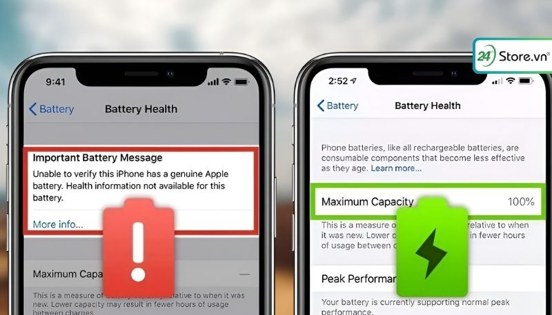2.2. Sạc pin iPhone chưa đúng cách
Bên cạnh những nguyên nhân khách quan như tuổi thọ pin hay lỗi phần mềm, thói quen sạc pin sai cách cũng góp phần khiến dung lượng tối đa pin iPhone sụt giảm nhanh chóng. Dưới đây là một số hành vi sạc pin phổ biến có thể gây hại cho pin iPhone:
Sử dụng cáp sạc không chính hãng: Sử dụng cáp sạc trôi nổi, kém chất lượng thường không đảm bảo đủ dòng điện ổn định, dẫn đến tình trạng sạc pin chập chờn, nóng pin và chai pin nhanh hơn.
Thường xuyên sạc pin qua đêm: Việc giữ iPhone trong tình trạng sạc pin liên tục trong thời gian dài, đặc biệt là qua đêm, có thể khiến pin bị chai do quá tải.
Để iPhone cạn pin hoàn toàn mới sạc: Việc sạc pin khi đã cạn kiệt hoàn toàn sẽ ảnh hưởng đến tuổi thọ pin và khiến pin chai nhanh hơn. Tốt nhất nên sạc pin khi còn khoảng 20-30%.
Sử dụng bộ sạc không phù hợp: Sử dụng bộ sạc có công suất cao hơn mức khuyến cáo cho iPhone có thể làm hỏng pin và dẫn đến nguy cơ cháy nổ.
Vừa sạc vừa sử dụng điện thoại: Việc vừa sạc pin vừa sử dụng các ứng dụng nặng, chơi game sẽ khiến pin iPhone nóng lên nhanh chóng, làm giảm tuổi thọ pin và tăng nguy cơ chai pin.
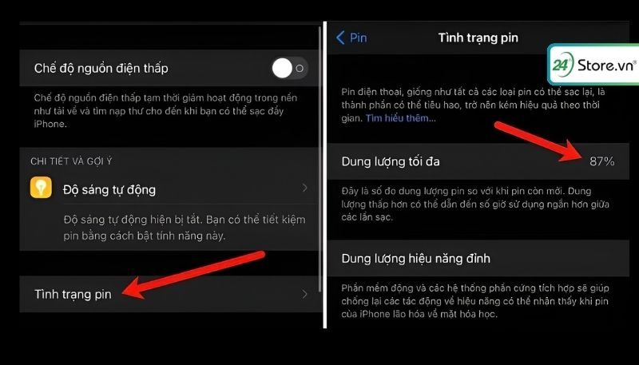2.3. Do quá nhiều ứng dụng chạy nền
Việc nhiều ứng dụng chạy ngầm trên iPhone mà không được tắt đúng cách có thể dẫn đến tình trạng dung lượng tối đa pin tụt nhanh do máy phải liên tục hoạt động ở hiệu suất cao. Lý do là vì các ứng dụng ngầm vẫn sẽ tiếp tục tiêu thụ pin dù bạn không sử dụng trực tiếp, dẫn đến tình trạng hao pin nhanh chóng.
Ngoài ra, việc chạy nhiều ứng dụng ngầm còn có thể gây ra các vấn đề khác như:
Giảm hiệu năng hoạt động: Khi nhiều ứng dụng chạy cùng lúc, iPhone sẽ phải hoạt động nhiều hơn để xử lý các tác vụ, dẫn đến tình trạng máy nóng lên, lag, đơ và giảm hiệu suất hoạt động.
Gây quá tải cho hệ thống: Việc sử dụng quá nhiều ứng dụng ngầm có thể khiến hệ thống iPhone bị quá tải, dẫn đến tình trạng treo máy, khởi động lại đột ngột hoặc thậm chí là hư hỏng phần mềm.
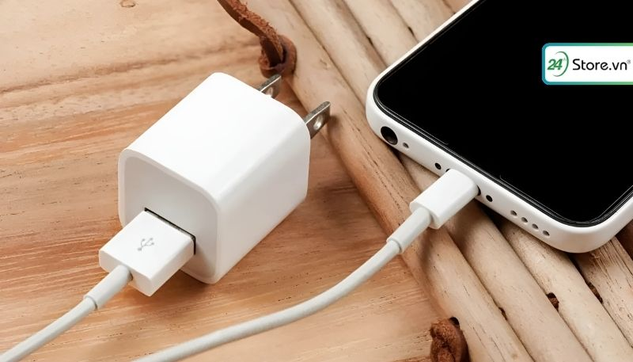3. Cách sửa lỗi iPhone bị tụt pin nhanh, đơn giản
Nhằm giải đáp câu hỏi iPhone dùng bao lâu thì tụt pin và khắc phục nguyên nhân tụt pin trên thiết bị iPhone của bạn sau đây là một số giải pháp:
3.1. Bật chế độ nguồn điện thấp
Khi iPhone báo pin yếu, bạn có thể kích hoạt chế độ nguồn điện thấp để kéo dài thời gian sử dụng pin hiệu quả. Chế độ này hoạt động bằng cách tạm thời tắt hoặc hạn chế một số tính năng trên iPhone như: tải xuống ứng dụng, tìm nạp thư, cập nhật tự động, hiệu ứng thị giác, làm mới ứng dụng nền, một số tính năng khác,... Khi bật chế độ nguồn điện thấp bạn sẽ thấy biểu tượng pin thay vì màu trắng nó sẽ màu vàng. Nhờ vậy, iPhone sẽ tiết kiệm được lượng pin đáng kể, giúp bạn có thêm thời gian sử dụng thiết bị trước khi cần sạc pin.
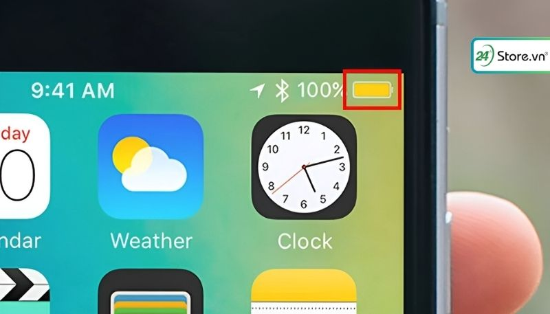3.2. Gỡ ứng dụng không cần thiết, tốn nhiều pin
Việc cài đặt quá nhiều ứng dụng trên iPhone có thể khiến điện thoại trở nên ì ạch và "nặng nề" hơn do phải xử lý nhiều tác vụ cùng lúc. Giải pháp hiệu quả cho vấn đề này chính là gỡ bỏ những ứng dụng không cần thiết cho iPhone làm giảm mức tiêu tốn pin không cần thiết cho thiết bị iPhone của bạn.
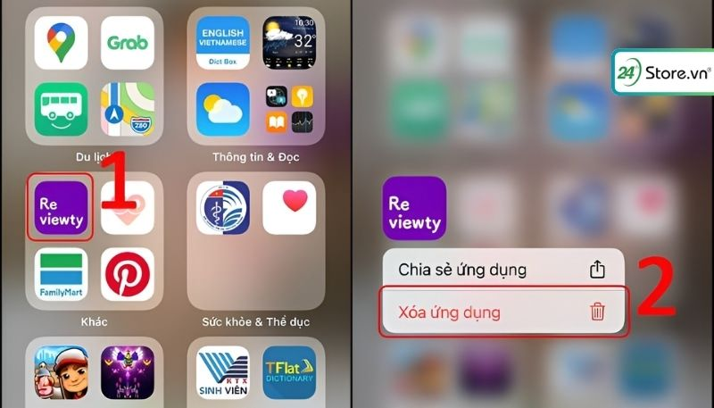3.3. Hạn chế thoát các đa nhiệm
Nhiều người dùng iPhone lầm tưởng rằng việc thường xuyên thoát ứng dụng đa nhiệm sẽ giúp tiết kiệm pin cho thiết bị. Tuy nhiên, thực tế lại hoàn toàn ngược lại! Theo khuyến cáo từ Apple, hành động liên tục thoát đa nhiệm sẽ khiến iPhone tiêu hao nhiều năng lượng hơn để khởi động và tải lại ứng dụng khi bạn truy cập lại. Thay vì tiết kiệm pin, việc này vô tình khiến iPhone nhanh hết pin hơn.
Vì vậy, thay vì thoát đa nhiệm liên tục, bạn nên hạn chế thực hiện thao tác này. Chỉ nên thoát ứng dụng khi bạn chắc chắn không sử dụng đến chúng nữa.
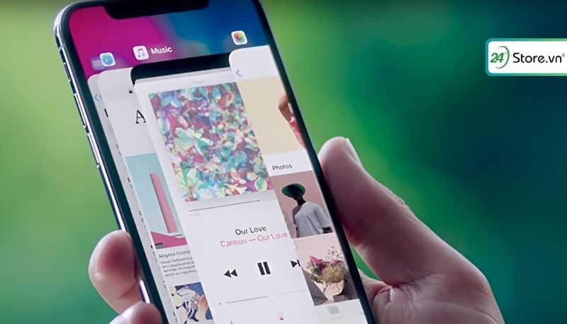3.4. Tắt làm mới ứng dụng nền iPhone
Nhiều người lầm tưởng rằng đa nhiệm là nguyên nhân chính khiến iPhone hao pin. Tuy nhiên, sự thật là tính năng "làm mới ứng dụng trong nền" mới là thủ phạm đưa ra câu hỏi iPhone dùng bao lâu thì tụt pin thực sự. Khi bật tính năng này, iPhone sẽ liên tục cập nhật và làm mới thông báo mới nhất từ các ứng dụng, ngay cả khi bạn không sử dụng và không mở ứng dụng đó. Việc này tiêu tốn rất nhiều năng lượng, khiến iPhone nhanh hết pin. Để khắc phục tình trạng này, bạn nên tắt tính năng làm mới ứng dụng trong nền. Việc này sẽ giúp kéo dài thời lượng pin cho iPhone hiệu quả.
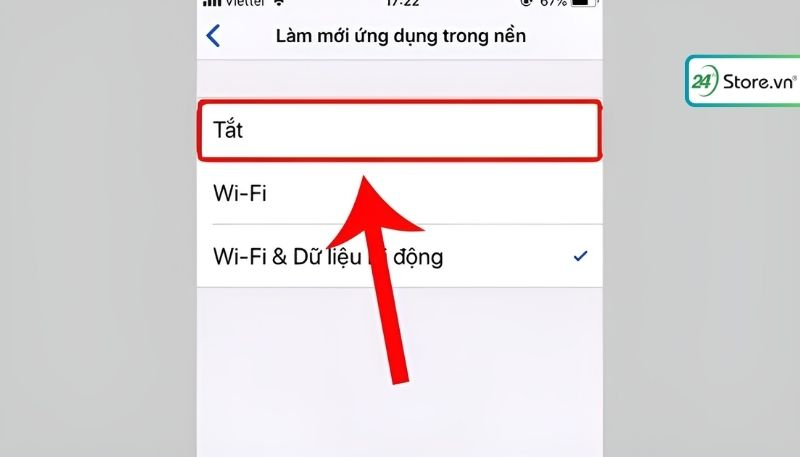3.5. Điều chỉnh độ sáng màn hình thích hợp
Độ sáng màn hình iPhone quá cao không chỉ khiến thiết bị nóng lên nhanh chóng mà còn dẫn đến tình trạng hao pin, giảm tuổi thọ pin và gây mỏi mắt do phải tiếp xúc với ánh sáng mạnh trong thời gian dài. Vì vậy bạn hãy học cách điều chỉnh độ sáng màn hình phù hợp với môi trường xung quanh để bảo vệ mắt và tiết kiệm pin cho iPhone hiệu quả hơn.
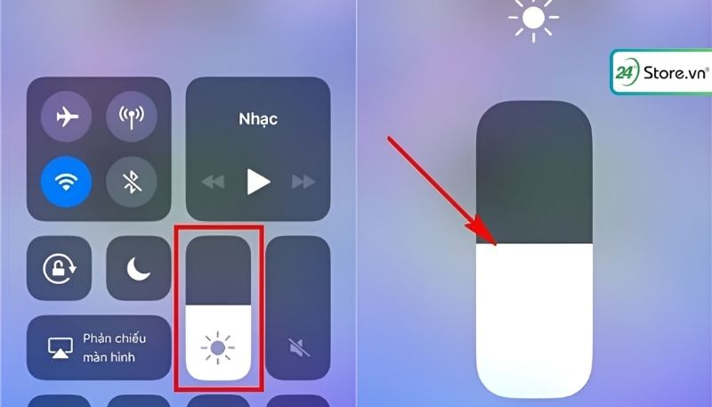3.6. Tắt 4G, Bluetooth, AirDrop khi không dùng tới
Bạn có biết rằng Bluetooth và AirDrop là hai nguyên nhân thầm lặng khiến pin iPhone tụt nhanh hơn không? Việc bật thường xuyên các tính năng này sẽ ngốn kha khá lượng pin của máy. Bạn nên tập thói quen tắt Bluetooth và AirDrop khi không sử dụng để bảo vệ pin cho chiếc iPhone của bạn nhé.
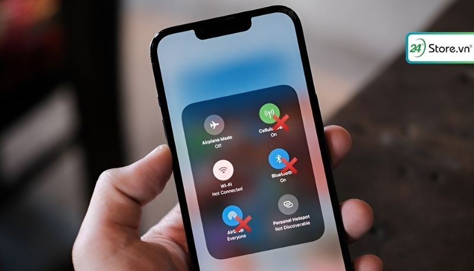3.7. Cập nhật phiên bản iOS mới nhất
Phiên bản iOS mới nhất thường đi kèm các bản vá lỗi cho những vấn đề tồn tại ở phiên bản trước, bao gồm cả tình trạng pin tụt nhanh. Do đó, nếu bạn đang gặp phải hiện tượng này, hãy cập nhật iPhone lên phiên bản iOS mới nhất để khắc phục. Và bạn hãy thường xuyên cập nhật iOS để đảm bảo iPhone hoạt động ổn định và hiệu quả.
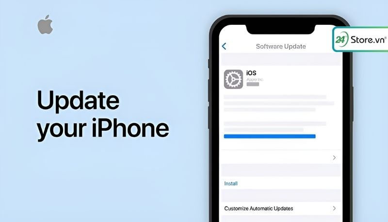3.8. Tắt định vị vị trí của ứng dụng muốn truy cập
Định vị vị trí là một tính năng hữu ích trên iPhone, nhưng cũng là nguyên nhân gây ra vấn đề tụt pin. Tính năng này hoạt động liên tục, ngầm ngầm tiêu hao pin ngay cả khi bạn không sử dụng. Bạn hãy học cách tắt định vị iPhone khi không cần thiết để bảo vệ pin cho iPhone của bạn. Việc tắt định vụ vị trí rất đơn giản, chỉ cần 2 bước như sau:
Bước 1: Mở Cài đặt > Quyền riêng tư > Dịch vụ vị trí.
Bước 2: Chọn Tắt định vị hoặc tắt định vị cho từng ứng dụng cụ thể.
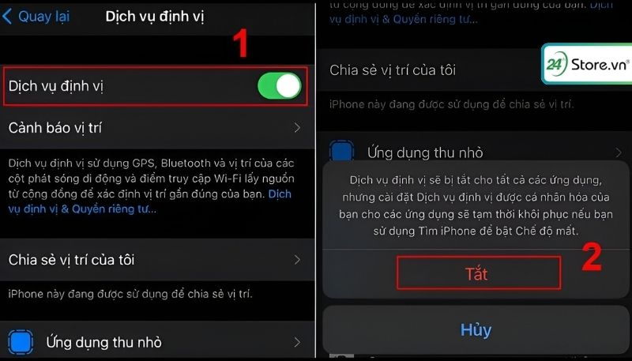3.9. Thay thế pin mới
Bạn đang sử dụng iPhone đã lâu và pin bắt đầu "xuống cấp"? Tình trạng tụt pin nhanh là dấu hiệu cho thấy viên pin trong máy đã đến lúc cần được thay thế. Để đảm bảo trải nghiệm sử dụng mượt mà và không bị gián đoạn, hãy chủ động thay pin mới cho iPhone khi cần thiết. Việc này sẽ giúp bạn giữ được hiệu năng cho thiết bị của bạn và kéo dài tuổi thọ của iPhone.
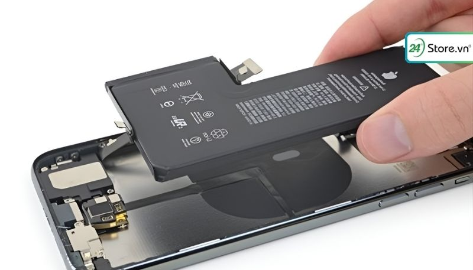4. Kiểm tra dung lượng pin iPhone chính xác
Để kiểm tra pin dung lượng iPhone đơn giản nhất bạn hãy thực hiện theo những bước sau:
Bước 1: Mở Cài đặt iPhone > Chọn Quyền riêng tư > Phân tích và cải tiến.
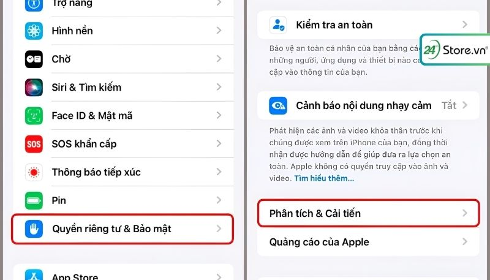Bước 2: Chọn Chia sẻ phân tích iPhone > Nhấn vào Dữ liệu phân tích > Tìm và mở file tên log-aggregated-XXX.ips (XXX là viết tắt cho ngày/tháng/năm gần nhất).
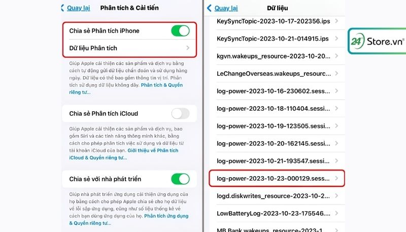Cách đọc thông số: Các thông tin về dung lượng pin bạn sẽ thấy tại file phân tích như sau:
[key]com.apple.snapshot.battery.maxCapacity[/key]
[integer]XXXX[/key]
Trong đó, XXXX là số dung lượng pin còn lại trên thiết bị của bạn. Ví dụ: Nếu XXXX = 2394 tương đương với khoảng 77% battery life trên iPhone 11.
Dung lượng pin mới mua các dòng iPhone:
| Pin iPhone | Dung lượng |
|---|---|
| iPhone 6 | 1810 mAh |
| iPhone 6 Plus | 2915 mAh |
| iPhone 6S | 1715 mAh |
| iPhone 6S Plus | 2750 mAh |
| iPhone 7 | 1960 mAh |
| iPhone 7 Plus | 2900 mAh |
| iPhone 8 | 1821 mAh |
| iPhone 8 Plus | 2675 mAh |
| iPhone SE | 1624 mAh |
| iPhone X | 2716 mAh |
| iPhone XS | 2658 mAh |
| iPhone XS Max | 3174 mAh |
| iPhone XR | 2942 mAh |
| iPhone 11 | 3110 mAh |
| iPhone 11 Pro | 3046 mAh |
| iPhone 11 Pro Max | 3969 mAh |
| iPhone SE (2020) | 1821 mAh |
| iPhone 12 | 2815 mAh |
| iPhone 12 Pro | 2815 mAh |
| iPhone 12 Pro Max | 3046 mAh |
| iPhone 13 | 3,227 mAh |
| iPhone 13 mini | 2,406 mAh |
| iPhone 13 Pro | 3,095 mAh |
| iPhone 13 Pro Max | 4,352 mAh |
| iPhone 14 | 3,279 mAh |
| iPhone 14 Plus | 4,325 mAh |
| iPhone 14 Pro | 3,200 mAh |
| iPhone 14 Pro Max | 4,323 mAh |
| iPhone 15 | 3,349 mAh |
| iPhone 15 Plus | 4,383 mAh |
| iPhone 15 Pro | 3,274 mAh |
| iPhone 15 Pro Max | 4,422 mAh |
5. Thay pin iPhone chính hãng ở đâu uy tín?
Khi bạn nhận ra chiếc iPhone của mình đã cần được thay pin bạn có thể thay pin ở những trung tâm bảo hành chính hãng của Apple hoặc các cửa hàng sửa chữa điện thoại uy tín để đảm bảo chất lượng pin và chính sách bảo hành rõ ràng. Bạn có thể đến cửa hàng 24hStore gần nhất trên toàn quốc để được nhận chính sách khuyến mãi khi thay pin, nhân viên tại đây sẽ hỗ trợ, tư vấn miễn phí, chi tiết cho bạn nhé.
6. Giải đáp câu hỏi thường gặp
Khi bạn đã biết được iPhone dùng bao lâu thì tụt pin rồi nhưng vẫn còn một số thắc mắc về vấn đề pin iPhone hơn nữa, dưới đây là tổng hợp những câu hỏi và lời giải đáp.
6.1. Nên mua iPhone cũ phần trăm pin bao nhiêu?
Nên mua iPhone dung lượng pin bao nhiêu? Dung lượng pin iPhone đạt trên 90% cho thấy pin vẫn còn ở trạng thái tốt và điện thoại chưa qua quá nhiều lần sạc. Việc mua điện thoại iPhone cũ với mức pin từ 90% trở lên sẽ giúp bạn giảm thiểu nguy cơ phải thay pin sớm, tiết kiệm chi phí sửa chữa.
Lựa chọn iPhone pin trên 90% là giải pháp hợp lý để sở hữu điện thoại giá rẻ mà vẫn đảm bảo hiệu năng sử dụng ổn định trong thời gian dài.
6.2. Trong 1 năm iPhone tụt bao nhiêu phần trăm pin?
Với nhu cầu sử dụng thông thường như nghe nhạc, xem phim, gọi điện và chơi game ít, pin iPhone sẽ giảm từ 2 - 5% trong 1 năm.
6.3. Vì sao iPhone lại tụt pin nhanh?
Tình trạng iPhone tụt pin nhanh có thể xuất phát từ nhiều yếu tố khác nhau, bao gồm:
- Thói quen sử dụng pin không đúng cách: Sạc pin sai cách, sử dụng pin không chính hãng, vừa sạc vừa dùng,...
- Kích hoạt các tính năng không cần thiết: Bluetooth, GPS, Wifi,... khi không sử dụng.
- Ứng dụng chạy ngầm: Làm mới ứng dụng trong nền liên tục.
- Lỗi hệ điều hành: Phiên bản iOS lỗi thời hoặc gặp trục trặc.
Bạn hãy xác định nguyên nhân cụ thể để có giải pháp khắc phục phù hợp, giúp iPhone luôn hoạt động ổn định và tiết kiệm pin hiệu quả nhất nhé.
7. Kết luận
Bài viết trên đã giải đáp thắc mắc cho bạn về câu hỏi iPhone dùng bao lâu thì tụt pin và những nguyên nhân, cách khắc phục tránh tình trạng tụt pin iPhone. Hy vọng với thông tin chia sẻ ở trên bạn sẽ khắc phục được tình trạng tụt pin trên thiết bị iPhone. Ngoài ra, nếu bạn có nhu cầu lên đời các dòng điện thoại iPhone chính hãng, giá ưu đãi hãy ghé ngay các cửa hàng 24hStore gần nhất để được tư vấn và nhận thêm nhiều khuyến mãi hấp dẫn nhé.